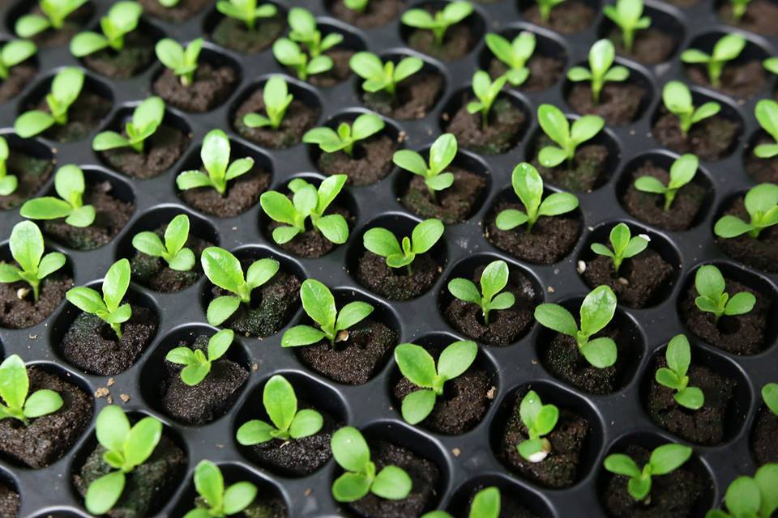

Our Mission
Our mission at Zeponic Farms is to provide local high quality produce, grown by adults with Special Needs and Autism.
Our Farms
Zeponic Farms utilizes recycled shipping containers equipped with LED lights, plumbing, climate controls, and many other features to create a highly efficient operation. The shipping container environment is custom fitted to be operational in virtually any indoor or outdoor location. Zeponic Farms is operational 365 days a year regardless of changes in our local climate.
Our Produce
We use no pesticide or herbicide on our produce and all minerals/nutrients used in our farms are completely natural containing no additives
